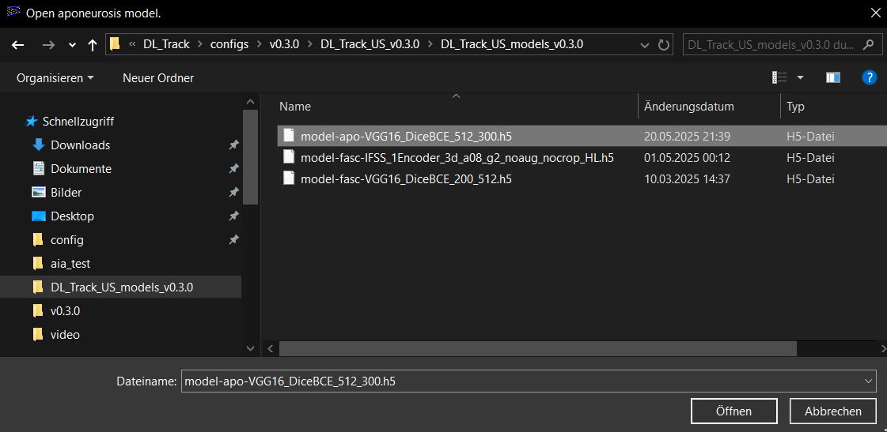
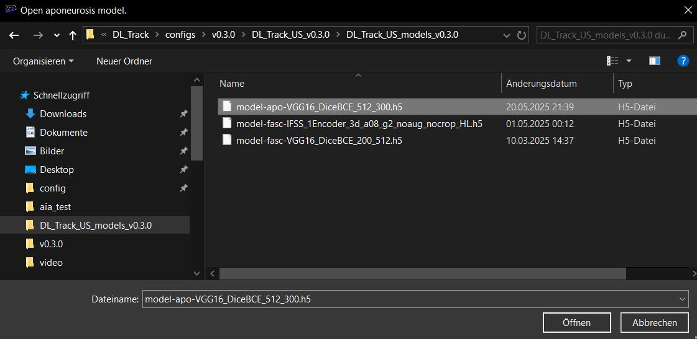
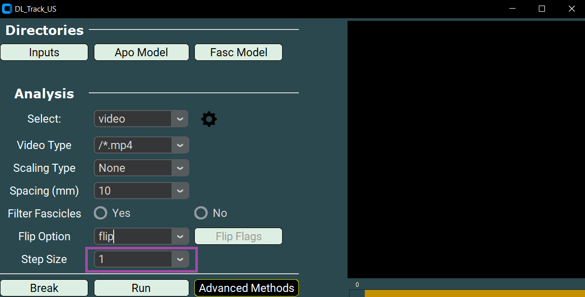

Automated Video Analysis
On this page you get to know the automated video analysis. The videos are evaluated without user input and may be scaled. The videos should be contained in a single folder, like in the “DL_Track_US_example/videos” folder.
If you haven’t downloaded this folder, please do so now (link: DL_Track_US - Examples & Models). Unzip the folder and put it somewhere accessible.
The automated video analysis is very similar to the automated image analysis. In fact, the inputted video is analysed frame by frame and each frame is therefore treated like an independent image. Moreover, only few analysis parameters are different between both analysis types.
Once the analysis of the video file is finished, a „proc.avi“ file will be created at the directoy of the input video. The „proc.avi“ file can be openend with, i.e., VLC-Player on windows and Omni-Player on macOS.
1. Creating Video and Network Directories
- In order for DL_Track_US to recognize your videos, they should best be in a single folder.
- The “DL_Track_US_example/videos“ folder contains one video.

2. Specifying Input Directories in the GUI
Once the GUI is openend, the first step of every analysis type in DL_Track_US is to specify the input directories in the graphical user interface (GUI).
- Start the analysis with specifying the path to the folder containing the video to be analysed.
- Remember this was the folder "DL_Track_US_example/video". By clicking on the Inputs button in the GUI a selection window opens were you need to select the images folder.
- Click select folder to specify the path in the GUI.

Now, you will specify the absolute path to the aponeurosis neural network.
- Remember that the model is in the “DL_Track_US_example/models” folder.
- By clicking on the Apo Model button in the GUI a selection window opens were you need to select the aponeurosis neural network in the models folder.
- Click open to specify the path to the aponeurosis neural network in the GUI
 

Next, you will specify the absolute path to the fascicle neural network.
- The model is in the “DL_Track_US_example/models” folder.
- By clicking on the Fasc Model button in the GUI a selection window opens were you need to select the fascicle neural network in the models folder.
- Click open to specify the path to the fascicle neural network in the GUI.


3. Specifying Analysis Parameters
As a first step, you will select the right analysis type in the GUI.
- Please select Video from the dropdown-menu.

You now need to specify the Video Type.
- The ending of the Video Type must match the ending of your videos, otherwise no files are found by DL_Track_US.
- You can either select a pre-specified ending from the dropdown list or type in your own ending.
- Please keep the formatting similar to those Video Type provided in the dropdown list.
- The video in the “DL_Track_US_example/video” folder are of the Video Type “.mp4”. Thus, you should select the “/*.mp4” Video Type.

Subsequently, you need to specify the video Scaling Type.
- Scaling in general has the advantage that the resulting estimated muscle architectural features are in centimetre units rather than pixel units.
- There are two Scaling Types in the DL_Track_US package.
- For this tutorial however, you will select the “None” option as displayed below.

The other Scaling Type is “Manual”. This Scaling Type requires input from the user.
- Whenever you use “Manual” as your Scaling Type, make sure that the minimal distance between the scaling bars or the known distance between the manually specified points is represented in the Spacing parameter.
- Select the Spacing parameter from the dropdown list as 5, 10, 15 or 20 millimetre. For this tutorial it is not necessary to select anything, as the Spacing parameter is not used during an analysis with Scaling Type “None”.

- When you choose “Manual” as your Scaling type, you need to manually place two points on the image using the left mouse button.
- In order to do this, you need to click Calibrate.

- Then, just click one time with your left mouse button to record the first point (a red dot will apear).
- Place the second point at a known distance of either 5, 10, 15 or 20 millimetre.
- Afterwards, click Confirm.

After confirming a messagebox should appear with the distance of the spacing parameter in pixels.

- In version 0.2.1 we introduced a new feature to DL_Track_US, called the Filter Fascicle option.
- Here, you have two options, “YES” or “NO”.
- Using “YES” all fascicles that overlap will be removed.

Here are some results demonstrating the difference in an image, for video frames the effect would be similar.

Another parameter that you need to specify is the Flip Options parameters.
- The Flip Options parameter determines if the whole video is flipped along the vertical axis. “Flip” stands for flipping the video, whereas “Don’t Flip” means please do not flip the video.
- The example video must be flipped.
- Its fascicle orientation is incorrect, with fascicles originating at the bottom right and inserting on the top left.
- Below is a visual representation of a correct fascicle orientation.
- The fascicles are originating at the bottom left and are inserting on the top right.
- Note that all videos in the specified input folder, in this case the DL_Track_US_example/video” folder, MUST have the same fascicle orientation, since the Flip Option is applied to all of them.


The next step is to specify the Frame Steps.
- You can either select a pre-specified Frame Step from the dropdown list or type your Frame Step.
- The Frame Step is used during the analysis as a step size while iterating through all the frames in a video.
- In this tutorial you should specify a Frame Step of 1. This means that every video frame is analysed. With a Frame Step of 3, every 3rd frame is analysed. With a Frame Step of 10, every 10th frame an so on.
- Although information is lost when you skip frames during the analysis, it also reduces the overall analysis time.

4. Adjusting Settings
As a last step, you need to adjust the settings for the aponeurosis and fascicle neural networks. If you click on the settings wheel a python script with the name "settings.py" opens up in your default text editor. On this page, all parameters used by the aponeurosis and fascicles neural networks during inference are specified. The default values are always listed on the right hand side of the parameters. The settings are explained in detail at the top of the settings.py file.


-
The aponeurosis detection threshold determines the threshold of the minimal acceptable probability by which a pixel is predicted as aponeurosis. The lower, the more pixels will be classified as aponeurosis.
-
Changing the aponeurosis length threshold will result in longer or shorter structures detected as aponeurosis.
-
The fascicle detection threshold and the fascicle lenght threshold are the same thing, just for the fasicles.
-
The minimal muscle width determines the minimal acceptable distance between superficial and deep aponeurosis.
-
Minimal and Maximal Pennation describe the respective minimal and maximal pennation angle that is physiologically possible in the analysed image/muscle.
-
The fascile calculation method determines the approach by which the fascile length is calculated. This can either be linear_extrapolation, curve_polyfitting, curve_connect_linear, curve_connect_poly or orientation_map.
-
The lower the fascile contour tolerance, the shorter the minimal acceptable length of detected fascicle segments to be included in the results.
-
The lower the aponeurosis distance tolerance, the nearer a fascicle fragment must be to the aponeurosis. This increases certainty of pennation angle calculation and extrapolation.
For this tutorial, you can leave all parameters the way they are. You can set the parameters by saving the python file. Adapt these parameters according to your images in analyses. For future analyses, it’s best you test the ideal parameter configuration in a small sample of your images prior to the actual analysis. If you should somehow distruct the settings.py file there is a backup called _backup_settings.py.
5. Running / Breaking DL_Track_US
- By clicking the Run button in the main GUI window, you can start the analysis.
- Moreover, you can see that there is a Break button placed in the GUI as well.
- Clicking the Break button allows you to stop the analysis at any point. The currently evaluated image will be processed and then the analysis is terminated.

After running the analyis the three lines are displayed in the line graph:
- Median Fascicle Length
- Median Filtered Fascicle Length
- Filtered Median Fascicle Length

Subsequently to clicking the Run button in the main GUI, navigate again to the “DL_Track_US_example/video”.
- You will see that two files will be / have been created, calf_raise_proc.avi and calf_raise.xlsx.
- The calf_raise_proc.avi file contains each the input video with overlaid segmented fascicles and aponeurosis. This file allows you to visually inspect the model outputs.
- The calf_raise.xlsx file contains the actual architectural parameter estimates for each video frame. There, all detected muscle fascicle lengths and pennation angles as well a the calculated muscle thickness will be displayed. Each video frame is displayed in a separate row.
- Note that the calf_raise_proc.avi file can be opened only after the calf_raise.xlsx. was created.

6. Error Handling
Whenever an error occurs during the analysis process, the DL_Track_US GUI will open a messagebox. This looks always similar to this:

We tried to formulate these messageboxes as concise as possible. Just follow their instructions to fix the error and run the analysis anew. In case an error occurs that is not caught by an error messagebox, don’t hesitate to report this in the Q&A section in the DL_Track_US discussion forum. Please take a look here how do best do this.